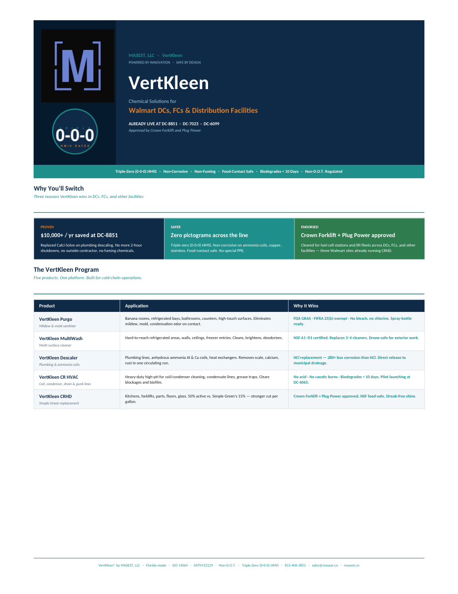
Distribution
Walmart distribution centers
CRHD positioned as a safer industrial degreaser replacement for high-traffic DC and FC cleaning programs.
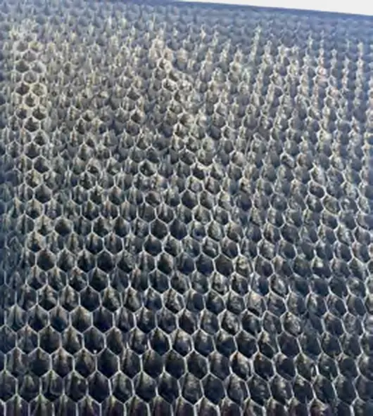
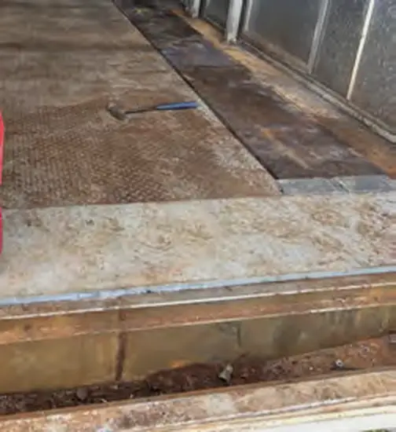
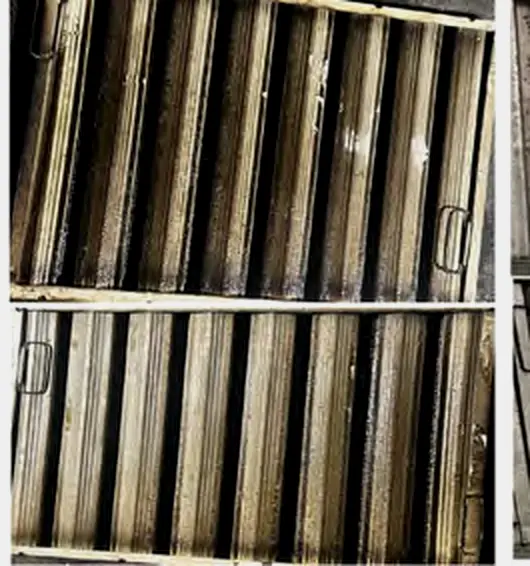
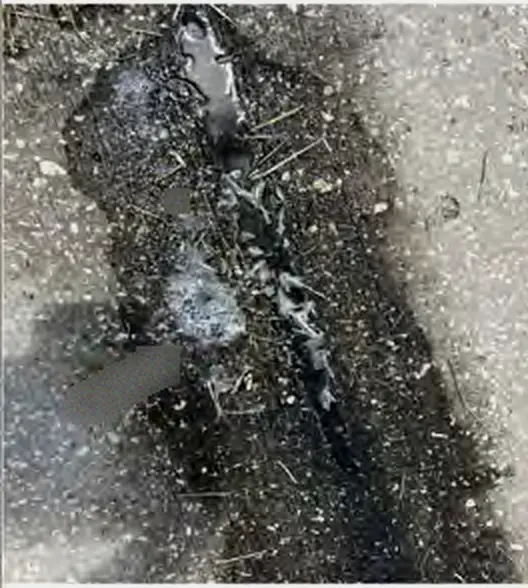
Scale that chokes heat transfer. Rust that eats steel. Grease that feeds fire risk. Bacteria that wait in warm water. These are real photos from real MASEST jobs.
Minerals crystallize into scale. Steel oxidizes into rust. Grease films harden. Biofilm takes hold. Layer by layer the walls close in, and every layer costs energy, capacity, and safety.
Crews fight buildup with acids, caustics, and biocides. Industry rates the danger of each one with HMIS, the Hazardous Materials Identification System: three numbers, each from 0 to 4.
Dissolves mineral scale fast. The same reaction burns skin, and its fumes corrode metal and wiring around the job.
Cuts grease by turning fat into soap. On skin it keeps reacting until it is fully washed away.
A biocide for the water loop. Toxic to breathe, and it burns when heated.
An oxidizer that controls Legionella. Potent in the loop, hazardous in the drum.
Every one of them lands on 3 for health: short exposure can cause serious, lasting injury. This is the chemistry most plants still run.
What if every number could fall to zero?
VertKleen is built to do the same work with a dramatically lower hazard profile: HMIS 0-0-0 across the core line, no fume drama, and simpler handling for occupied sites.
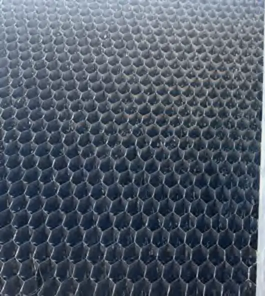
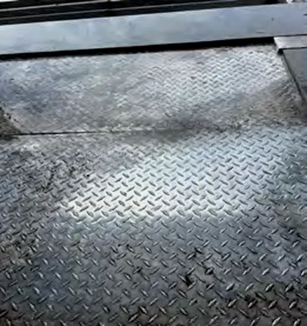
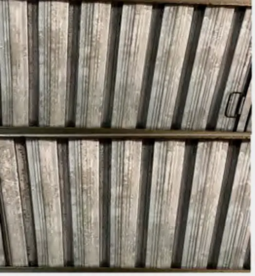
VertKleen's patented SynTec and SynClean chemistry matches each legacy acid, caustic, and biocide at the job it does, then drops the hazard to nothing. Same scale removal, same cutting power, same microbial control, rated HMIS 0-0-0.
| The job | Conventional chemistry | Hazard | VertKleen equal | Hazard |
|---|---|---|---|---|
| Acid cleaning & passivation | Hydrochloric and inhibited acids | 3‑0‑1 | VertKleen HCR | 0‑0‑0 |
| pH control & caustic | Caustic soda, sodium hydroxide | 3‑0‑1 | VertKleen CR | 0‑0‑0 |
| Degreasing | Caustic and solvent degreasers | 2‑1‑0 | VertKleen Neutral | 0‑0‑0 |
| Scale & corrosion inhibitor | Phosphate, zinc, molybdate blends | 2‑0‑0 | WaterSafe60 | 0‑0‑0 |
| Oxidizing biocide | Stabilized bromine, bleach | 3‑0‑1 | Purgo | 0‑0‑0 |
| Non-oxidizing biocide | Glutaraldehyde 50%, flammable and toxic | 3‑2‑0 | DBNPA Tablet | Low |
HMIS scores hazard from 0 (none) to 4 (severe) across health, flammability, and reactivity. Ratings vary by manufacturer and concentration; typical SDS values are shown. Every VertKleen product runs 0-0-0, with one mild-hazard exception: the DBNPA tablet, a low-dose, controlled-release biocide used once a quarter.
Clean, passivate, and service with the building occupied. No evacuations, no exposure events, lighter PPE for your crew.
Safe on skin and eyes, non-fumingNo DOT hazmat freight, no flammable or acid cabinets, simpler SDS, and fewer OSHA and HazCom triggers to manage.
Non-hazmat shipping worldwideNo heavy metals and no neutralizer waste stream. NSF/ANSI 60 inhibitors with full ASHRAE 188 documentation behind every claim.
Biodegrades in under 10 daysTell us the legacy chemical you are trying to retire, and we will point you to its VertKleen equal.
SynTec-powered replacements for hydrochloric, phosphoric, and sulfuric acids. Descale, derust, and passivate at HMIS 0-0-0.
Browse acid replacementsNSF/ANSI 60 replacements for sodium and potassium hydroxide, plus neutral-pH degreasing for sensitive surfaces and seals.
Browse alkaline replacementsEach product is a direct, drop-in replacement for a specific hazardous chemical. Find the one that matches what you use today.
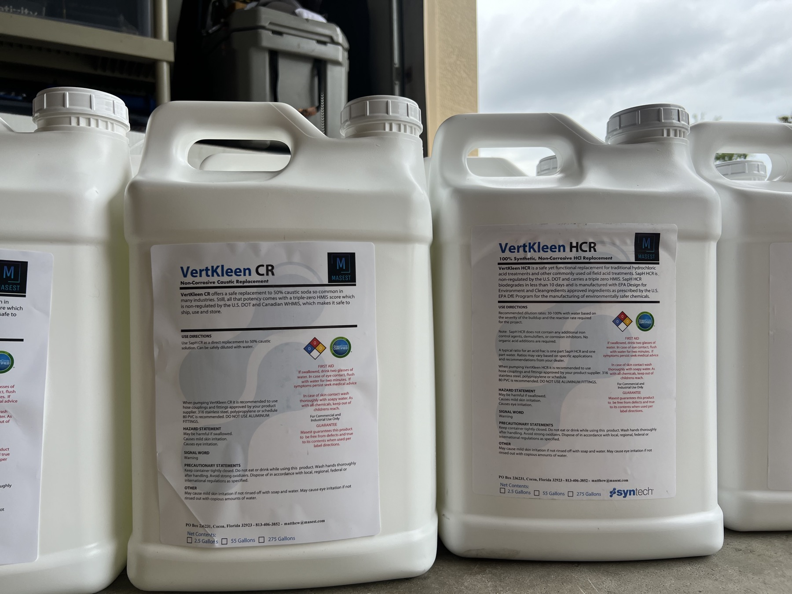
The updated source library adds real customer environments: distribution centers, breweries, building exteriors, HVAC systems, and maintenance crews replacing harsh legacy chemistry.

CRHD positioned as a safer industrial degreaser replacement for high-traffic DC and FC cleaning programs.
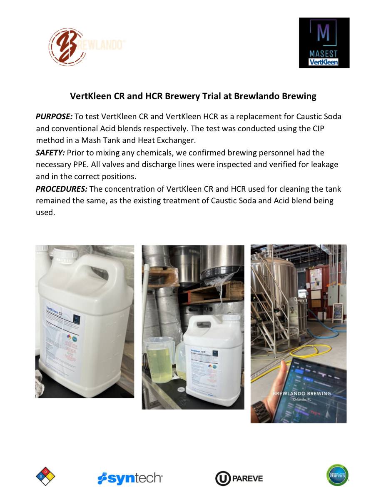
CR and HCR trial material documents brewery tanks, heat exchangers, and CIP/SIP cleaning workflows.
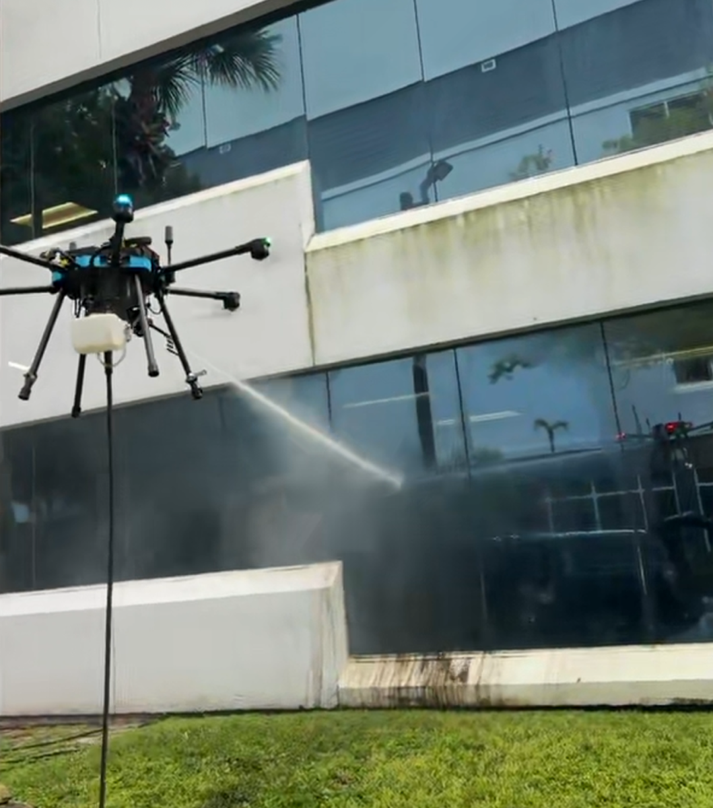
MultiWash proof assets show exterior scale, algae, and grime removal on occupied property maintenance work.
Drilling rigs and pipeline terminals
Cruise ship and vessel operations
Equipment, concrete, and site maintenance
SAM.gov registered, procurement-ready
Cooling towers and Legionella programs
Occupied-campus safe chemistry
Aluminum extrusion and processing
Breweries, distilleries, and restaurants
Tell us which legacy chemical you use today: acid, caustic, biocide, or degreaser.
We map you to the VertKleen equivalent, with technical documentation and application support.
Request a quote or distributor connection. Non-hazmat shipping gets product to you faster, for less.
Quotes are tailored to your industry, volume, and location, then routed directly to the MASEST sales team.